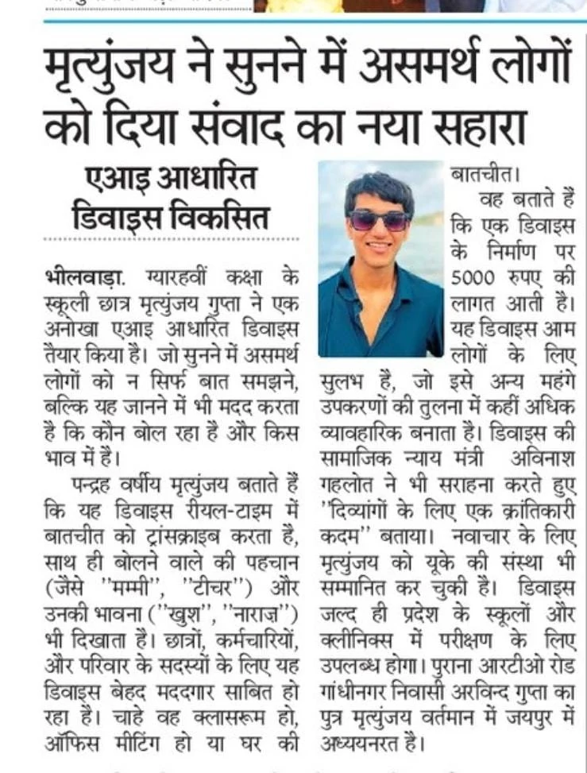
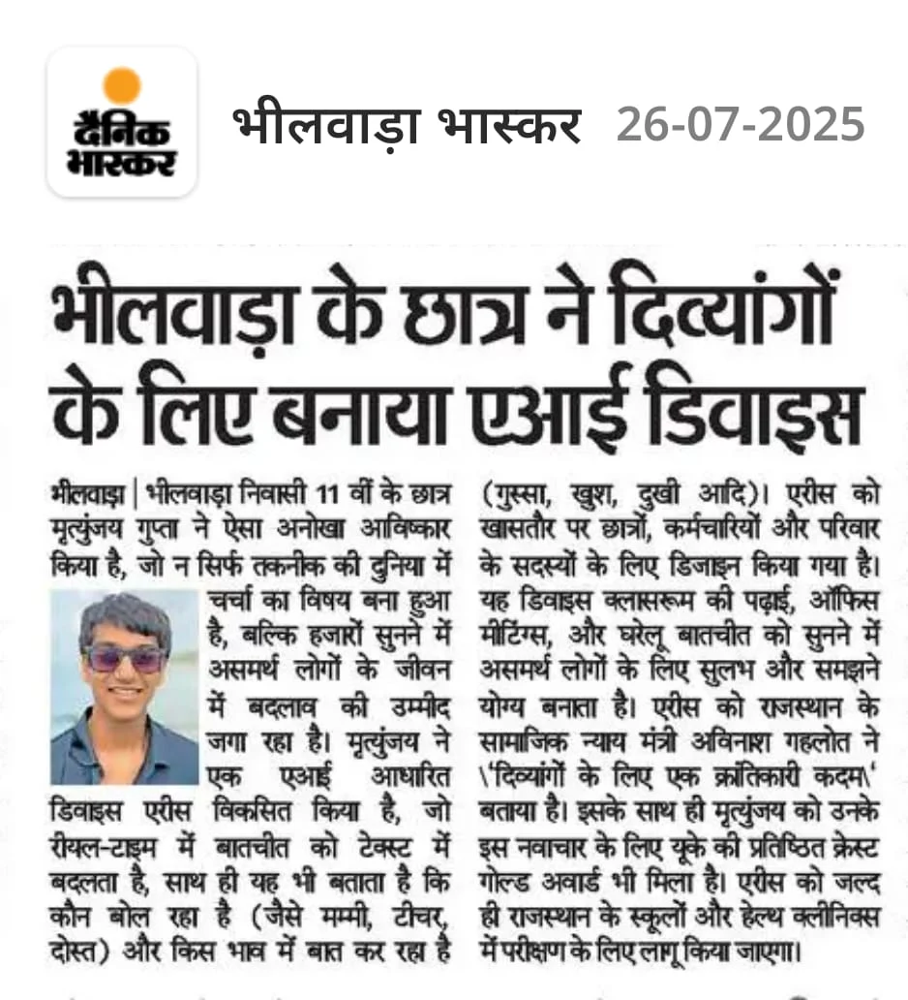
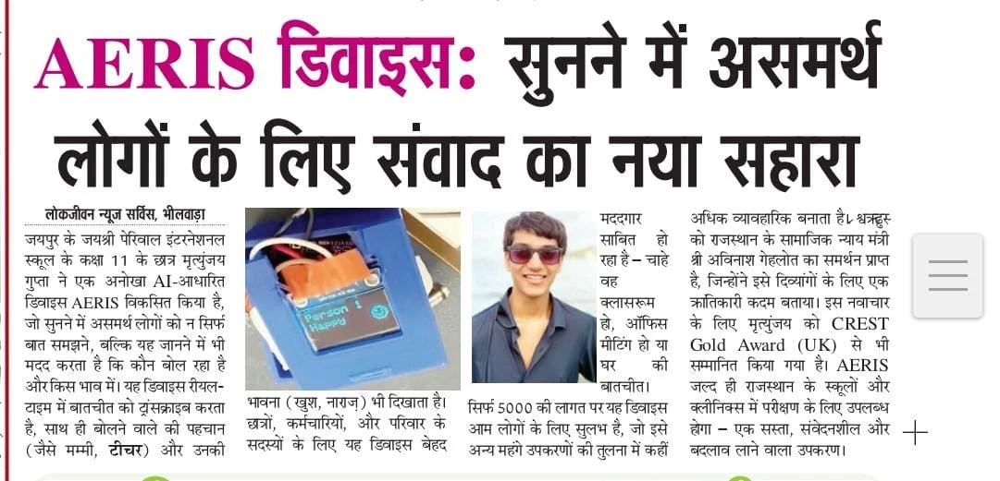
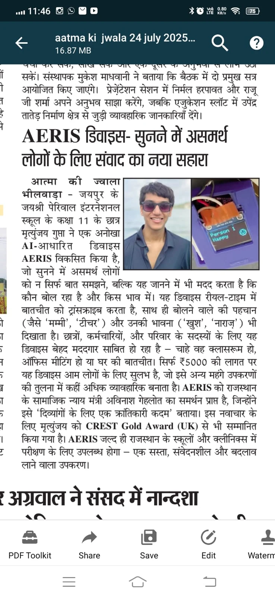
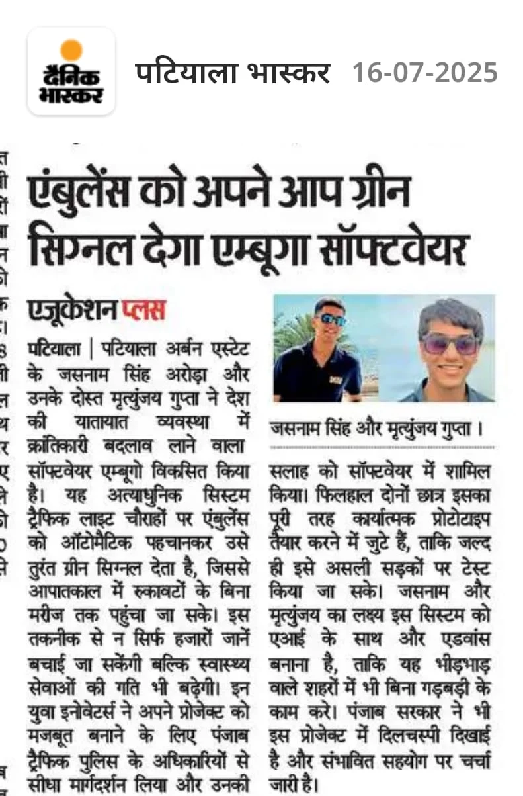
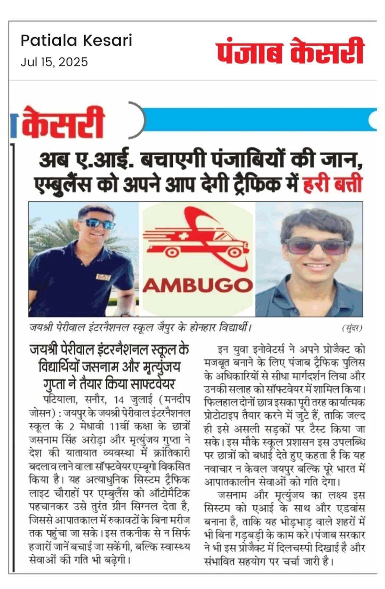
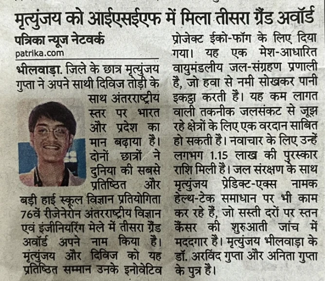
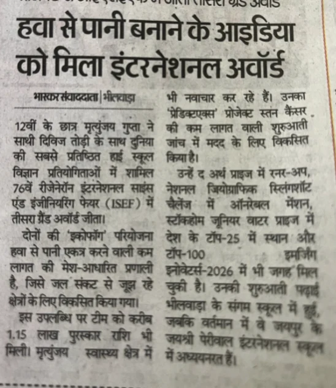

Media & documents
Media coverage
Online articles & interviews8 clippings
















Research & project documents
AmbuGo simulation studyAmbuGo deployment agreementPredictX provisional-patent manuscriptPhysics-informed spirometry studyEcoFog research paperEcoFog ISEF posterComplex singularities & timbreCapstan friction & rope-slipHuman Archive internship completionAERIS IEEE paperAERIS hardware documentationRésumé
PredictX hospital evaluation
MoUs and evaluation reports from all five hospitals.